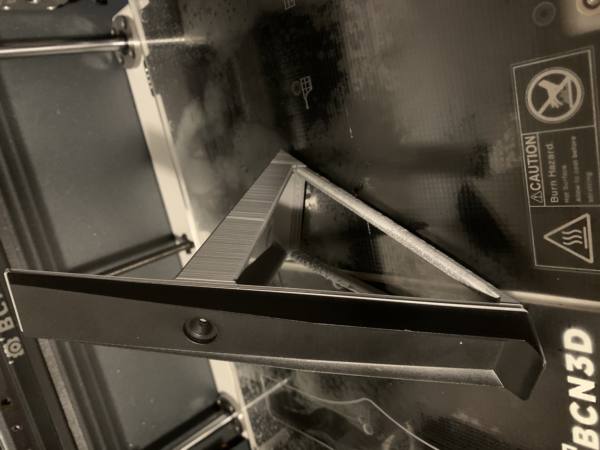
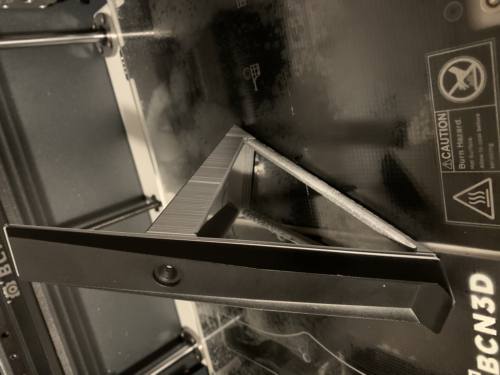
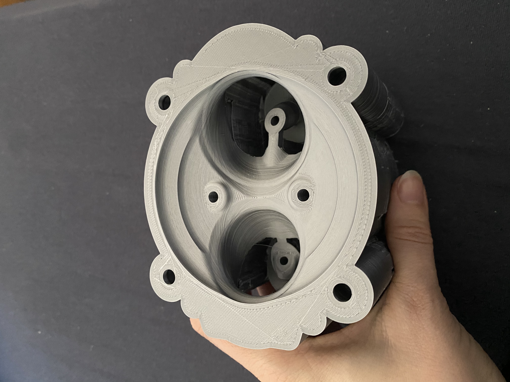
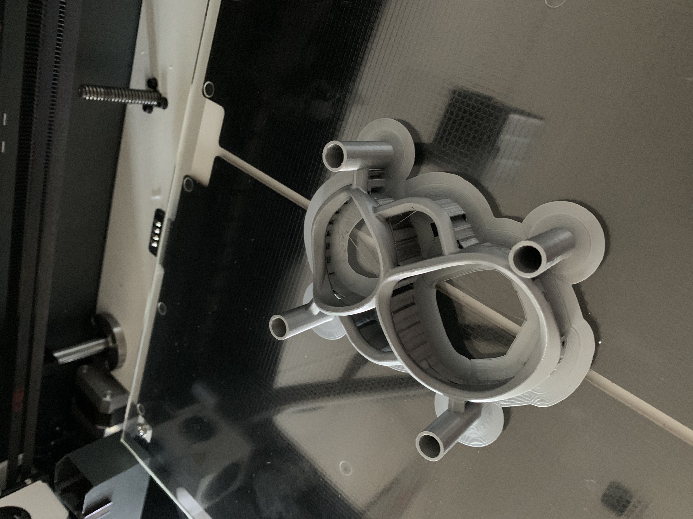
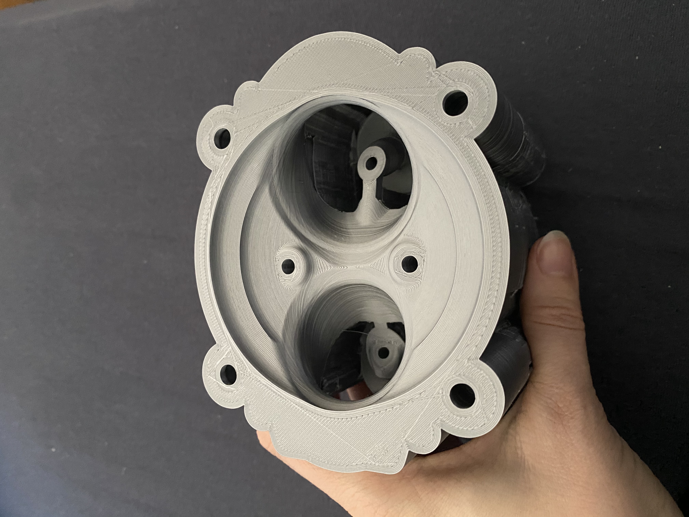
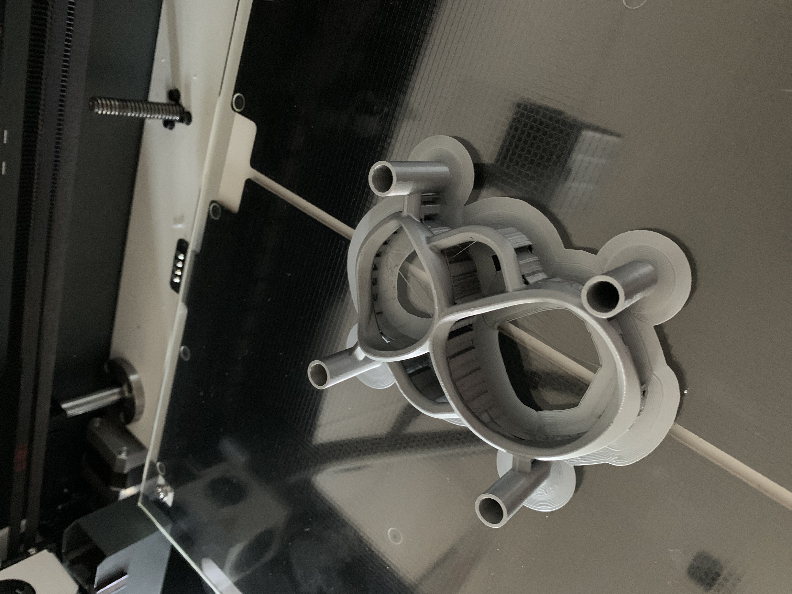

prototyping
11/20183dprint / digital fab
digital fabrication has accompanied me for a few years now. I have been in charge of the lasercutting @ intitute of architecture and media. This has evolved in the development of prototypes, like the cylinder head for a racing motor bike as seen below. digital fabrication like cnc milling, lasercutting and 3d printing are one of my passions and hobbies.
 

 


